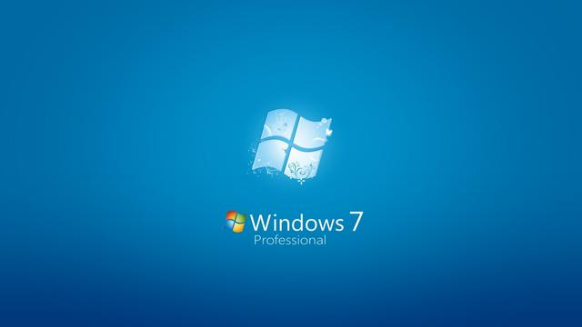

Win 8は私たちをひどい目に合わせたが、Win 10はこの状況を変えるかもしれない。
今週水曜日、マイクロソフトは消費者版Windows 10（以下「Win 10」と略す）を発表した。2年以上にわたる苦しいWin 8時代を経て、マイクロソフトはついに全新シリーズ製品を投入したが、これは外部からモバイル時代におけるマイクロソフトの自己救済と解釈されている。Win 10について、私たちは何を知っておくべきだろうか。
全プラットフォーム一体化の達成

Win 10はPC、モバイルデバイス、スマートプラットフォームという「3大要素」でクロスプラットフォーム操作が可能だ。これ以上にクールなことがあるだろうか。これは決してでたらめではない。
据えるところによると、Win 10はスマートフォン、タブレット、デスクトップPC、Xbox Oneなど、ほぼすべての端末で動作する。もしそれが本当に実現すれば、マイクロソフトユーザーはアップルユーザーと同様に、最終的にWPシステムとWin 10の統合を実現し、すべてのプラットフォームを同じインターフェースに統合し、同じアプリストアを利用することになるだろう。
皆さんがお馴染みの「スタートメニュー」が戻ってきた。

何しろWin 10が対象とするより大きな層は一般消費者であり、彼らは企業ユーザーとは異なり、真のユーザーエクスペリエンスを重視している。そのため、発表会の開催前にマイクロソフトはすでにその宣伝を開始しており、先陣を切ったのが「スタートメニューがWin 10で復活する」という重要なセールスポイントだった。
新版Continuumインターフェースが登場する可能性

「マルチプラットフォーム対応」という大風呂敷を広げた以上、「マルチプラットフォーム切り替えソリューション」である新版Continuumも間もなくWin 10で登場する。先日公開された新版Continuumの使用動画を見ると、すべてが「流れるようにスムーズ」で、見た目も良くクールだ。
同じプラットフォーム上で複数のデスクトップを操作することもついに実現可能に

Windowsシステムの「マルチタスク管理」の不便さは、これまでユーザーが主に不満を抱く対象の一つだった。しかし今回はWin 10がその見方を変えてくれるだろう。マイクロソフトは今回、仮想デスクトップ、プログラムウィンドウ、マルチタスク管理を含むすべてのデスクトップ利用の詳細を改善し、分屏でのプログラム実行も、新しい「タスクビュー」機能も、ユーザーにより良い体験をもたらすだろう。
Win 7の公式サポートを終了し、全力でWin 10に注力

マイクロソフトは、2015年1月13日からWindows Server 2008、Exchange Server 2010、およびWin 7のホーム版、プロフェッショナル版、スターター版、エンタープライズ版、アルティメット版を含む複数の製品に対するメインストリームサポートサービスを終了すると発表した。これはマイクロソフトが全力をWin 10に注ぎ込み、ユーザーに徐々にWin 7を手放さざるを得なくさせることを意味する。
正式な販売価格は未発表だが、マイクロソフトのCOOは絶対に赤字にはできないと語る
皆さんはWin 10の販売価格を非常に気にしているが、公式は口が固く、数字はまだ発表されていない。マイクロソフトのCOOケビン・ターナーは2014年12月10日のクレディ・スイス・テクノロジー投資カンファレンスで「我々はまだWin 10の価格体系を発表していません。しかし、お伝えできるのは、Win 10で赤字を出すことは考えたことがないということです」と述べた。
原文出处：http://tech.qq.com/a/20150120/013243.htm